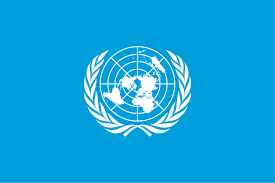
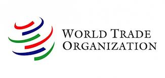
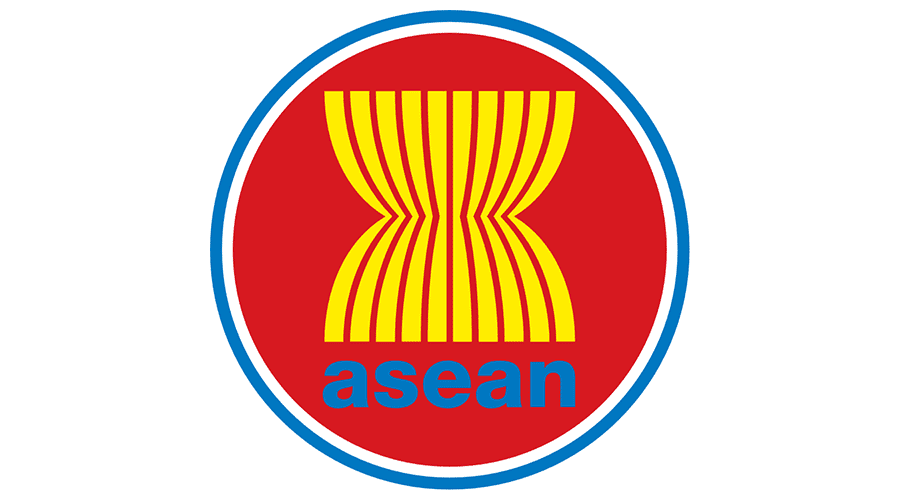

  
Kerjasama yang meliputi lebih dari dua negara dalam forum internasional yang lebih luas dan tidak dibatasi oleh letak geografis. Kerjasama ini biasanya diadakan untuk memecahkan masalah global, menegakkan hukum internasional, ataupun memperkuat perdamaian dunia. Kerja sama ini biasanya difasilitasi oleh organisasi internasional atau forum global, sehingga setiap negara dapat menyampaikan pendapat, mengambil keputusan, dan melaksanakan kebijakan yang disepakati bersama.
Tujuan Kerjasama Multilateral
- Menyelesaikan permasalahan global,seperti perubahan iklim, perdagangan internasional, dan kesehatan.
- Menciptakan perdamaian dan stabilitas dunia.
- Meningkatkan hubungan diplomatik antarnegara.
Contoh Kerjasama Multilateral
PBB (Perserikatan Bangsa-Bangsa)
WTO (World Trade Organization)
WHO (World Health Organization)
ASEAN (Association of Southeast Asian Nations) -> regional dan multilateral